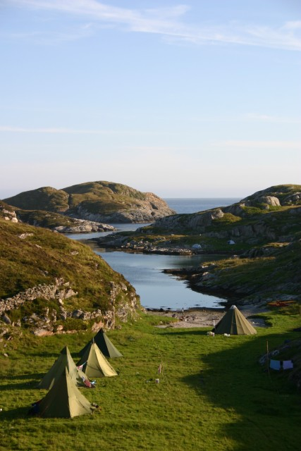

// Copyright Paul-Johan Seim
Base Camp
Voici les photos du camp

-Vive la nature norvégienne!!-
-Vue vers la mer-
-La rentrée des kayakistes-
-La mer norvégienne-
-L'escalade-
-Vous le voyez?-
-On goûte aux huitres-
-Tout le groupe-
-Seulement une dizaine de mètres!!-
Retour
Index